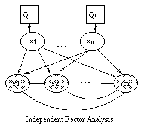
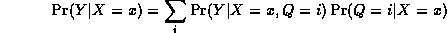
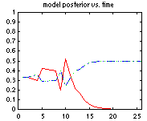
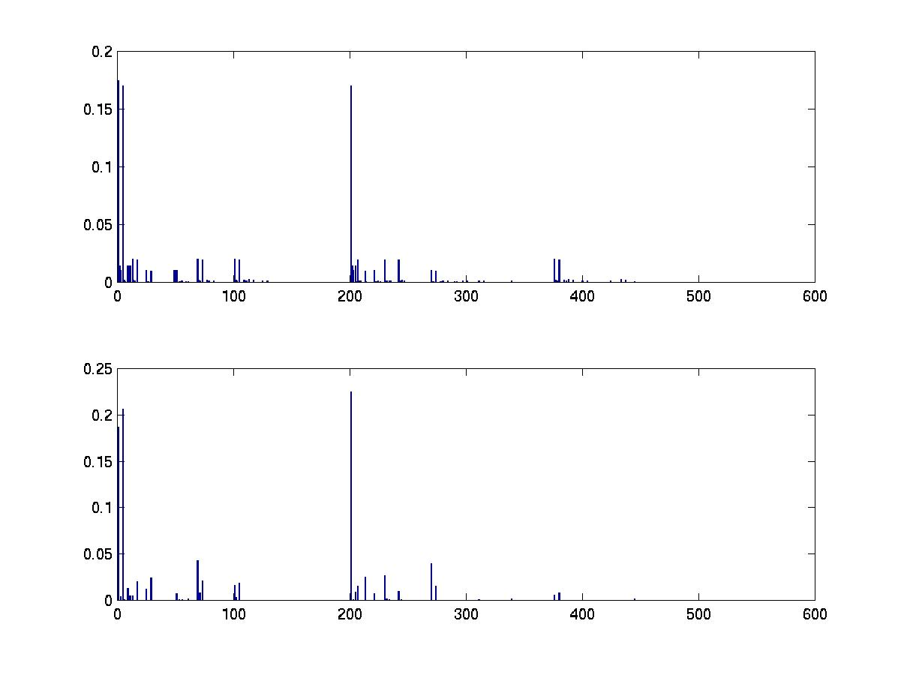
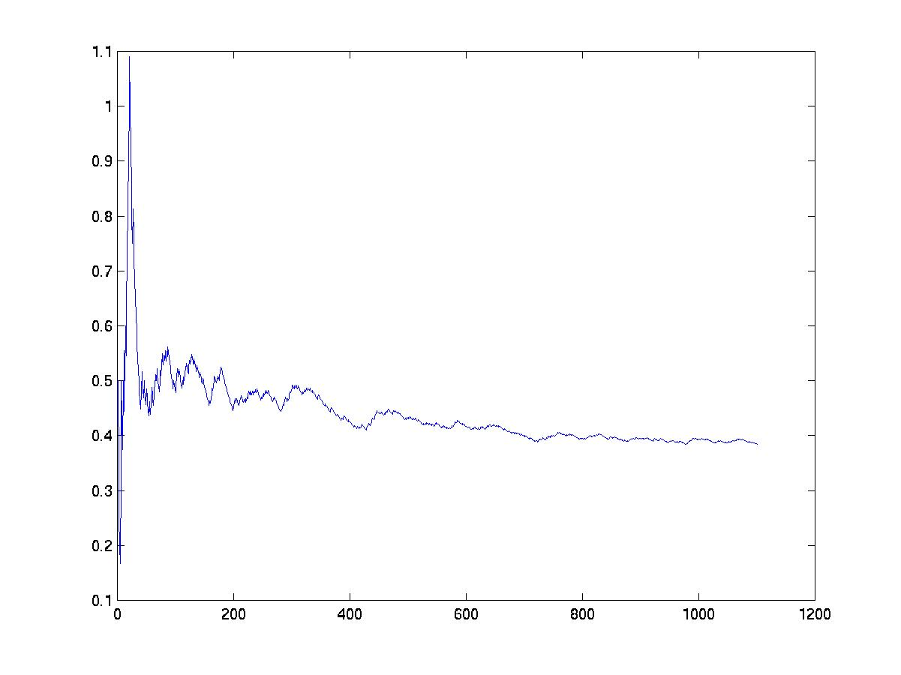

To specify this directed acyclic graph (dag), we create an adjacency matrix:
N = 4; dag = zeros(N,N); C = 1; S = 2; R = 3; W = 4; dag(C,[R S]) = 1; dag(R,W) = 1; dag(S,W)=1;
We have numbered the nodes as follows: Cloudy = 1, Sprinkler = 2, Rain = 3, WetGrass = 4. The nodes must always be numbered in topological order, i.e., ancestors before descendants. For a more complicated graph, this is a little inconvenient: we will see how to get around this below.
In Matlab 6, you can use logical arrays instead of double arrays, which are 4 times smaller:
dag = false(N,N); dag(C,[R S]) = true; ...However, some graph functions (eg acyclic) do not work on logical arrays!
You can visualize the resulting graph structure using the methods discussed below. For details on GUIs, click here.
discrete_nodes = 1:N; node_sizes = 2*ones(1,N);If the nodes were not binary, you could type e.g.,
node_sizes = [4 2 3 5];meaning that Cloudy has 4 possible values, Sprinkler has 2 possible values, etc. Note that these are cardinal values, not ordinal, i.e., they are not ordered in any way, like 'low', 'medium', 'high'.
We are now ready to make the Bayes net:
bnet = mk_bnet(dag, node_sizes, 'discrete', discrete_nodes);By default, all nodes are assumed to be discrete, so we can also just write
bnet = mk_bnet(dag, node_sizes);You may also specify which nodes will be observed. If you don't know, or if this not fixed in advance, just use the empty list (the default).
onodes = []; bnet = mk_bnet(dag, node_sizes, 'discrete', discrete_nodes, 'observed', onodes);Note that optional arguments are specified using a name/value syntax. This is common for many BNT functions. In general, to find out more about a function (e.g., which optional arguments it takes), please see its documentation string by typing
help mk_bnetSee also other useful Matlab tips.
It is possible to associate names with nodes, as follows:
bnet = mk_bnet(dag, node_sizes, 'names', {'cloudy','S','R','W'}, 'discrete', 1:4);
You can then refer to a node by its name:
C = bnet.names('cloudy'); % bnet.names is an associative array
bnet.CPD{C} = tabular_CPD(bnet, C, [0.5 0.5]);
This feature uses my own associative array class.
Tabular CPDs, also called CPTs (conditional probability tables), are stored as multidimensional arrays, where the dimensions are arranged in the same order as the nodes, e.g., the CPT for node 4 (WetGrass) is indexed by Sprinkler (2), Rain (3) and then WetGrass (4) itself. Hence the child is always the last dimension. If a node has no parents, its CPT is a column vector representing its prior. Note that in Matlab (unlike C), arrays are indexed from 1, and are layed out in memory such that the first index toggles fastest, e.g., the CPT for node 4 (WetGrass) is as follows

where we have used the convention that false==1, true==2. We can create this CPT in Matlab as follows
CPT = zeros(2,2,2); CPT(1,1,1) = 1.0; CPT(2,1,1) = 0.1; ...Here is an easier way:
CPT = reshape([1 0.1 0.1 0.01 0 0.9 0.9 0.99], [2 2 2]);In fact, we don't need to reshape the array, since the CPD constructor will do that for us. So we can just write
bnet.CPD{W} = tabular_CPD(bnet, W, 'CPT', [1 0.1 0.1 0.01 0 0.9 0.9 0.99]);
The other nodes are created similarly (using the old syntax for
optional parameters)
bnet.CPD{C} = tabular_CPD(bnet, C, [0.5 0.5]);
bnet.CPD{R} = tabular_CPD(bnet, R, [0.8 0.2 0.2 0.8]);
bnet.CPD{S} = tabular_CPD(bnet, S, [0.5 0.9 0.5 0.1]);
bnet.CPD{W} = tabular_CPD(bnet, W, [1 0.1 0.1 0.01 0 0.9 0.9 0.99]);
rand('state', seed);
randn('state', seed);
To control the degree of randomness (entropy),
you can sample each row of the CPT from a Dirichlet(p,p,...) distribution.
If p << 1, this encourages "deterministic" CPTs (one entry near 1, the rest near 0).
If p = 1, each entry is drawn from U[0,1].
If p >> 1, the entries will all be near 1/k, where k is the arity of
this node, i.e., each row will be nearly uniform.
You can do this as follows, assuming this node
is number i, and ns is the node_sizes.
k = ns(i);
ps = parents(dag, i);
psz = prod(ns(ps));
CPT = sample_dirichlet(p*ones(1,k), psz);
bnet.CPD{i} = tabular_CPD(bnet, i, 'CPT', CPT);
It is currently not possible to save/load a BNT matlab object to file, but this is easily fixed if you modify all the constructors for all the classes (see matlab documentation).
engine = jtree_inf_engine(bnet);The other engines have similar constructors, but might take additional, algorithm-specific parameters. All engines are used in the same way, once they have been created. We illustrate this in the following sections.
evidence = cell(1,N);
evidence{W} = 2;
We use a 1D cell array instead of a vector to
cope with the fact that nodes can be vectors of different lengths.
In addition, the value [] can be used
to denote 'no evidence', instead of having to specify the observation
pattern as a separate argument.
(Click here for a quick tutorial on cell
arrays in matlab.)
We are now ready to add the evidence to the engine.
[engine, loglik] = enter_evidence(engine, evidence);The behavior of this function is algorithm-specific, and is discussed in more detail below. In the case of the jtree engine, enter_evidence implements a two-pass message-passing scheme. The first return argument contains the modified engine, which incorporates the evidence. The second return argument contains the log-likelihood of the evidence. (Not all engines are capable of computing the log-likelihood.)
Finally, we can compute p=P(S=2|W=2) as follows.
marg = marginal_nodes(engine, S);
marg.T
ans =
0.57024
0.42976
p = marg.T(2);
We see that p = 0.4298.
Now let us add the evidence that it was raining, and see what difference it makes.
evidence{R} = 2;
[engine, loglik] = enter_evidence(engine, evidence);
marg = marginal_nodes(engine, S);
p = marg.T(2);
We find that p = P(S=2|W=2,R=2) = 0.1945,
which is lower than
before, because the rain can ``explain away'' the
fact that the grass is wet.
You can plot a marginal distribution over a discrete variable as a barchart using the built 'bar' function:
bar(marg.T)This is what it looks like

evidence = cell(1,N);
evidence{W} = 2;
engine = enter_evidence(engine, evidence);
m = marginal_nodes(engine, W);
m.T
ans =
1
This can get a little confusing, since we assigned W=2.
So we can ask BNT to add the evidence back in by passing in an optional argument:
m = marginal_nodes(engine, W, 1);
m.T
ans =
0
1
This shows that P(W=1|W=2) = 0 and P(W=2|W=2) = 1.
evidence = cell(1,N); [engine, ll] = enter_evidence(engine, evidence); m = marginal_nodes(engine, [S R W]);m is a structure. The 'T' field is a multi-dimensional array (in this case, 3-dimensional) that contains the joint probability distribution on the specified nodes.
>> m.T
ans(:,:,1) =
0.2900 0.0410
0.0210 0.0009
ans(:,:,2) =
0 0.3690
0.1890 0.0891
We see that P(S=1,R=1,W=2) = 0, since it is impossible for the grass
to be wet if both the rain and sprinkler are off.
Let us now add some evidence to R.
evidence{R} = 2;
[engine, ll] = enter_evidence(engine, evidence);
m = marginal_nodes(engine, [S R W])
m =
domain: [2 3 4]
T: [2x1x2 double]
>> m.T
m.T
ans(:,:,1) =
0.0820
0.0018
ans(:,:,2) =
0.7380
0.1782
The joint T(i,j,k) = P(S=i,R=j,W=k|evidence)
should have T(i,1,k) = 0 for all i,k, since R=1 is incompatible
with the evidence that R=2.
Instead of creating large tables with many 0s, BNT sets the effective
size of observed (discrete) nodes to 1, as explained above.
This is why m.T has size 2x1x2.
To get a 2x2x2 table, type
m = marginal_nodes(engine, [S R W], 1)
m =
domain: [2 3 4]
T: [2x2x2 double]
>> m.T
m.T
ans(:,:,1) =
0 0.082
0 0.0018
ans(:,:,2) =
0 0.738
0 0.1782
Note: It is not always possible to compute the joint on arbitrary sets of nodes: it depends on which inference engine you use, as discussed in more detail below.
[engine, loglik] = enter_evidence(engine, evidence, 'soft', soft_evidence);where soft_evidence{i} is either [] (if node i has no soft evidence) or is a vector representing the probability distribution over i's possible values. For example, if we don't know i's exact value, but we know its likelihood ratio is 60/40, we can write evidence{i} = [] and soft_evidence{i} = [0.6 0.4].
Currently only jtree_inf_engine supports this option. It assumes that all hidden nodes, and all nodes for which we have soft evidence, are discrete. For a longer example, see BNT/examples/static/softev1.m.
[mpe, ll] = calc_mpe(engine, evidence);mpe{i} is the most likely value of node i. This calls enter_evidence with the 'maximize' flag set to 1, which causes the engine to do max-product instead of sum-product. The resulting max-marginals are then thresholded. If there is more than one maximum probability assignment, we must take care to break ties in a consistent manner (thresholding the max-marginals may give the wrong result). To force this behavior, type
[mpe, ll] = calc_mpe(engine, evidence, 1);Note that computing the MPE is someties called abductive reasoning.
You can also use calc_mpe_bucket written by Ron Zohar, that does a forwards max-product pass, and then a backwards traceback pass, which is how Viterbi is traditionally implemented.
A B P(C=off) P(C=on) --------------------------- F F 1.0 0.0 T F q(A) 1-q(A) F T q(B) 1-q(B) T T q(A)q(B) 1-q(A)q(B)Thus we see that the causes get inhibited independently. It is common to associate a "leak" node with a noisy-or CPD, which is like a parent that is always on. This can account for all other unmodelled causes which might turn the node on.
The noisy-or distribution is similar to the logistic distribution. To see this, let the nodes, S(i), have values in {0,1}, and let q(i,j) be the prob. that j inhibits i. Then
Pr(S(i)=1 | parents(S(i))) = 1 - prod_{j} q(i,j)^S(j)
Now define w(i,j) = -ln q(i,j) and rho(x) = 1-exp(-x). Then
Pr(S(i)=1 | parents(S(i))) = rho(sum_j w(i,j) S(j))For a sigmoid node, we have
Pr(S(i)=1 | parents(S(i))) = sigma(-sum_j w(i,j) S(j))where sigma(x) = 1/(1+exp(-x)). Hence they differ in the choice of the activation function (although both are monotonically increasing). In addition, in the case of a noisy-or, the weights are constrained to be positive, since they derive from probabilities q(i,j). In both cases, the number of parameters is linear in the number of parents, unlike the case of a multinomial distribution, where the number of parameters is exponential in the number of parents. We will see an example of noisy-OR nodes below.
Both of these classes are just "syntactic sugar" for the tabular_CPD class.
exp(w(:,i)'*x + b(i))
Pr(Q=i | X=x) = -----------------------------
sum_j exp(w(:,j)'*x + b(j))
The parameters of a softmax node, w(:,i) and b(i), i=1..|Q|, have the
following interpretation: w(:,i)-w(:,j) is the normal vector to the
decision boundary between classes i and j,
and b(i)-b(j) is its offset (bias). For example, suppose
X is a 2-vector, and Q is binary. Then
w = [1 -1;
0 0];
b = [0 0];
means class 1 are points in the 2D plane with positive x coordinate,
and class 2 are points in the 2D plane with negative x coordinate.
If w has large magnitude, the decision boundary is sharp, otherwise it
is soft.
In the special case that Q is binary (0/1), the softmax function reduces to the logistic
(sigmoid) function.
Fitting a softmax function can be done using the iteratively reweighted least squares (IRLS) algorithm. We use the implementation from Netlab. Note that since the softmax distribution is not in the exponential family, it does not have finite sufficient statistics, and hence we must store all the training data in uncompressed form. If this takes too much space, one should use online (stochastic) gradient descent (not implemented in BNT).
If a softmax node also has discrete parents, we use a different set of w/b parameters for each combination of parent values, as in the conditional linear Gaussian CPD. This feature was implemented by Pierpaolo Brutti. He is currently extending it so that discrete parents can be treated as if they were continuous, by adding indicator variables to the X vector.
We will see an example of softmax nodes below.
- no parents: Y ~ N(mu, Sigma) - cts parents : Y|X=x ~ N(mu + W x, Sigma) - discrete parents: Y|Q=i ~ N(mu(:,i), Sigma(:,:,i)) - cts and discrete parents: Y|X=x,Q=i ~ N(mu(:,i) + W(:,:,i) * x, Sigma(:,:,i))where N(mu, Sigma) denotes a Normal distribution with mean mu and covariance Sigma. Let |X|, |Y| and |Q| denote the sizes of X, Y and Q respectively. If there are no discrete parents, |Q|=1; if there is more than one, then |Q| = a vector of the sizes of each discrete parent. If there are no continuous parents, |X|=0; if there is more than one, then |X| = the sum of their sizes. Then mu is a |Y|*|Q| vector, Sigma is a |Y|*|Y|*|Q| positive semi-definite matrix, and W is a |Y|*|X|*|Q| regression (weight) matrix.
We can create a Gaussian node with random parameters as follows.
bnet.CPD{i} = gaussian_CPD(bnet, i);
We can specify the value of one or more of the parameters as in the
following example, in which |Y|=2, and |Q|=1.
bnet.CPD{i} = gaussian_CPD(bnet, i, 'mean', [0; 0], 'weights', randn(Y,X), 'cov', eye(Y));
We will see an example of conditional linear Gaussian nodes below.
When learning Gaussians from data, it is helpful to ensure the data has a small magnitde (see e.g., KPMstats/standardize) to prevent numerical problems. Unless you have a lot of data, it is also a very good idea to use diagonal instead of full covariance matrices. (BNT does not currently support spherical covariances, although it would be easy to add, since KPMstats/clg_Mstep supports this option; you would just need to modify gaussian_CPD/update_ess to accumulate weighted inner products.)
The CPD_to_CPT method converts a CPD to a table; this requires that the child and all parents are discrete. The CPT might be exponentially big... convert_to_table evaluates a CPD with evidence, and represents the the resulting potential as an array. This requires that the child is discrete, and any continuous parents are observed. convert_to_pot evaluates a CPD with evidence, and represents the resulting potential as a dpot, gpot, cgpot or upot, as requested. (d=discrete, g=Gaussian, cg = conditional Gaussian, u = utility).
When we sample a node, all the parents are observed. When we compute the (log) probability of a node, all the parents and the child are observed.
We also specify if the parameters are learnable. For learning with EM, we require the methods reset_ess, update_ess and maximize_params. For learning from fully observed data, we require the method learn_params. By default, all classes inherit this from generic_CPD, which simply calls update_ess N times, once for each data case, followed by maximize_params, i.e., it is like EM, without the E step. Some classes implement a batch formula, which is quicker.
Bayesian learning means computing a posterior over the parameters given fully observed data.
Pearl means we implement the methods compute_pi and compute_lambda_msg, used by pearl_inf_engine, which runs on directed graphs. belprop_inf_engine only needs convert_to_pot.H The pearl methods can exploit special properties of the CPDs for computing the messages efficiently, whereas belprop does not.
The only method implemented by generic_CPD is adjustable_CPD, which is not shown, since it is not very interesting.
| Name | Child | Parents | Comments | CPD_to_CPT | conv_to_table | conv_to_pot | sample | prob | learn | Bayes | Pearl |
| boolean | B | B | Syntactic sugar for tabular | - | - | - | - | - | - | - | - |
| deterministic | D | D | Syntactic sugar for tabular | - | - | - | - | - | - | - | - |
| Discrete | D | C/D | Virtual class | N | Calls CPD_to_CPT | Calls conv_to_table | Calls conv_to_table | Calls conv_to_table | N | N | N |
| Gaussian | C | C/D | - | N | N | Y | Y | Y | Y | N | N |
| gmux | C | C/D | multiplexer | N | N | Y | N | N | N | N | Y |
| MLP | D | C/D | multi layer perceptron | N | Y | Inherits from discrete | Inherits from discrete | Inherits from discrete | Y | N | N |
| noisy-or | B | B | - | Y | Inherits from discrete | Inherits from discrete | Inherits from discrete | Inherits from discrete | N | N | Y |
| root | C/D | none | no params | N | N | Y | Y | Y | N | N | N |
| softmax | D | C/D | - | N | Y | Inherits from discrete | Inherits from discrete | Inherits from discrete | Y | N | N |
| generic | C/D | C/D | Virtual class | N | N | N | N | N | N | N | N |
| Tabular | D | D | - | Y | Inherits from discrete | Inherits from discrete | Inherits from discrete | Inherits from discrete | Y | Y | Y |

| 
| 
|  |
| (a) | (b) | (c) | (d) |
We can create this model in BNT as follows.
ns = [k D];
dag = zeros(2,2);
dag(1,2) = 1;
bnet = mk_bnet(dag, ns, 'discrete', []);
bnet.CPD{1} = gaussian_CPD(bnet, 1, 'mean', zeros(k,1), 'cov', eye(k), ...
'cov_type', 'diag', 'clamp_mean', 1, 'clamp_cov', 1);
bnet.CPD{2} = gaussian_CPD(bnet, 2, 'mean', zeros(D,1), 'cov', diag(Psi0), 'weights', W0, ...
'cov_type', 'diag', 'clamp_mean', 1);
The root node is clamped to the N(0,I) distribution, so that we will
not update these parameters during learning.
The mean of the leaf node is clamped to 0,
since we assume the data has been centered (had its mean subtracted
off); this is just for simplicity.
Finally, the covariance of the leaf node is constrained to be
diagonal. W0 and Psi0 are the initial parameter guesses.
We can fit this model (i.e., estimate its parameters in a maximum likelihood (ML) sense) using EM, as we explain below. Not surprisingly, the ML estimates for mu and Psi turn out to be identical to the sample mean and variance, which can be computed directly as
mu_ML = mean(data); Psi_ML = diag(cov(data));Note that W can only be identified up to a rotation matrix, because of the spherical symmetry of the source.
If we restrict Psi to be spherical, i.e., Psi = sigma*I, there is a closed-form solution for W as well, i.e., we do not need to use EM. In particular, W contains the first |X| eigenvectors of the sample covariance matrix, with scalings determined by the eigenvalues and sigma. Classical PCA can be obtained by taking the sigma->0 limit. For details, see
By adding a hidden discrete variable, we can create mixtures of FA models, as shown in (c). Now we can explain the data using a set of subspaces. We can create this model in BNT as follows.
ns = [M k D];
dag = zeros(3);
dag(1,3) = 1;
dag(2,3) = 1;
bnet = mk_bnet(dag, ns, 'discrete', 1);
bnet.CPD{1} = tabular_CPD(bnet, 1, Pi0);
bnet.CPD{2} = gaussian_CPD(bnet, 2, 'mean', zeros(k, 1), 'cov', eye(k), 'cov_type', 'diag', ...
'clamp_mean', 1, 'clamp_cov', 1);
bnet.CPD{3} = gaussian_CPD(bnet, 3, 'mean', Mu0', 'cov', repmat(diag(Psi0), [1 1 M]), ...
'weights', W0, 'cov_type', 'diag', 'tied_cov', 1);
Notice how the covariance matrix for Y is the same for all values of
Q; that is, the noise level in each sub-space is assumed the same.
However, we allow the offset, mu, to vary.
For details, see
I have included Zoubin's specialized MFA code (with his permission) with the toolbox, so you can check that BNT gives the same results: see 'BNT/examples/static/mfa1.m'.
Independent Factor Analysis (IFA) generalizes FA by allowing a non-Gaussian prior on each component of X. (Note that we can approximate a non-Gaussian prior using a mixture of Gaussians.) This means that the likelihood function is no longer rotationally invariant, so we can uniquely identify W and the hidden sources X. IFA also allows a non-diagonal Psi (i.e. correlations between the components of Y). We recover classical Independent Components Analysis (ICA) in the Psi -> 0 limit, and by assuming that |X|=|Y|, so that the weight matrix W is square and invertible. For details, see

|
X is the observed input, Y is the output, and the Q nodes are hidden "gating" nodes, which select the appropriate set of parameters for Y. During training, Y is assumed observed, but for testing, the goal is to predict Y given X. Note that this is a conditional density model, so we don't associate any parameters with X. Hence X's CPD will be a root CPD, which is a way of modelling exogenous nodes. If the output is a continuous-valued quantity, we assume the "experts" are linear-regression units, and set Y's CPD to linear-Gaussian. If the output is discrete, we set Y's CPD to a softmax function. The Q CPDs will always be softmax functions.
As a concrete example, consider the mixture of experts model where X and Y are scalars, and Q is binary. This is just piecewise linear regression, where we have two line segments, i.e.,

We can create this model with random parameters as follows. (This code is bundled in BNT/examples/static/mixexp2.m.)
X = 1;
Q = 2;
Y = 3;
dag = zeros(3,3);
dag(X,[Q Y]) = 1
dag(Q,Y) = 1;
ns = [1 2 1]; % make X and Y scalars, and have 2 experts
onodes = [1 3];
bnet = mk_bnet(dag, ns, 'discrete', 2, 'observed', onodes);
rand('state', 0);
randn('state', 0);
bnet.CPD{1} = root_CPD(bnet, 1);
bnet.CPD{2} = softmax_CPD(bnet, 2);
bnet.CPD{3} = gaussian_CPD(bnet, 3);
Now let us fit this model using EM.
First we load the data (1000 training cases) and plot them.
data = load('/examples/static/Misc/mixexp_data.txt', '-ascii');
plot(data(:,1), data(:,2), '.');

This is what the model looks like before training. (Thanks to Thomas Hofman for writing this plotting routine.)

Now let's train the model, and plot the final performance. (We will discuss how to train models in more detail below.)
ncases = size(data, 1); % each row of data is a training case cases = cell(3, ncases); cases([1 3], :) = num2cell(data'); % each column of cases is a training case engine = jtree_inf_engine(bnet); max_iter = 20; [bnet2, LLtrace] = learn_params_em(engine, cases, max_iter);(We specify which nodes will be observed when we create the engine. Hence BNT knows that the hidden nodes are all discrete. For complex models, this can lead to a significant speedup.) Below we show what the model looks like after 16 iterations of EM (with 100 IRLS iterations per M step), when it converged using the default convergence tolerance (that the fractional change in the log-likelihood be less than 1e-3). Before learning, the log-likelihood was -322.927442; afterwards, it was -13.728778.
Pierpaolo Brutti has written an extensive set of routines for HMEs, which are bundled with BNT: see the examples/static/HME directory. These routines allow you to choose the number of hidden (gating) layers, and the form of the experts (softmax or MLP). See the file hmemenu, which provides a demo. For example, the figure below shows the decision boundaries learned for a ternary classification problem, using a 2 level HME with softmax gates and softmax experts; the training set is on the left, the testing set on the right.

For more details, see the following:

function bnet = mk_qmr_bnet(G, inhibit, leak, prior)
% MK_QMR_BNET Make a QMR model
% bnet = mk_qmr_bnet(G, inhibit, leak, prior)
%
% G(i,j) = 1 iff there is an arc from disease i to finding j
% inhibit(i,j) = inhibition probability on i->j arc
% leak(j) = inhibition prob. on leak->j arc
% prior(i) = prob. disease i is on
[Ndiseases Nfindings] = size(inhibit);
N = Ndiseases + Nfindings;
finding_node = Ndiseases+1:N;
ns = 2*ones(1,N);
dag = zeros(N,N);
dag(1:Ndiseases, finding_node) = G;
bnet = mk_bnet(dag, ns, 'observed', finding_node);
for d=1:Ndiseases
CPT = [1-prior(d) prior(d)];
bnet.CPD{d} = tabular_CPD(bnet, d, CPT');
end
for i=1:Nfindings
fnode = finding_node(i);
ps = parents(G, i);
bnet.CPD{fnode} = noisyor_CPD(bnet, fnode, leak(i), inhibit(ps, i));
end
In the file BNT/examples/static/qmr1, we create a random bipartite
graph G, with 5 diseases and 10 findings, and random parameters.
(In general, to create a random dag, use 'mk_random_dag'.)
We can visualize the resulting graph structure using
the methods discussed below, with the
following results:

Now let us put some random evidence on all the leaves except the very first and very last, and compute the disease posteriors.
pos = 2:floor(Nfindings/2); neg = (pos(end)+1):(Nfindings-1); onodes = myunion(pos, neg); evidence = cell(1, N); evidence(findings(pos)) = num2cell(repmat(2, 1, length(pos))); evidence(findings(neg)) = num2cell(repmat(1, 1, length(neg))); engine = jtree_inf_engine(bnet); [engine, ll] = enter_evidence(engine, evidence); post = zeros(1, Ndiseases); for i=diseases(:)' m = marginal_nodes(engine, i); post(i) = m.T(2); endJunction tree can be quite slow on large QMR models. Fortunately, it is possible to exploit properties of the noisy-OR function to speed up exact inference using an algorithm called quickscore, discussed below.
We now give an example of a CG model, from the paper "Propagation of Probabilities, Means amd Variances in Mixed Graphical Association Models", Steffen Lauritzen, JASA 87(420):1098--1108, 1992 (reprinted in the book "Probabilistic Networks and Expert Systems", R. G. Cowell, A. P. Dawid, S. L. Lauritzen and D. J. Spiegelhalter, Springer, 1999.)

We can create this model as follows.
F = 1; W = 2; E = 3; B = 4; C = 5; D = 6; Min = 7; Mout = 8; L = 9; n = 9; dag = zeros(n); dag(F,E)=1; dag(W,[E Min D]) = 1; dag(E,D)=1; dag(B,[C D])=1; dag(D,[L Mout])=1; dag(Min,Mout)=1; % node sizes - all cts nodes are scalar, all discrete nodes are binary ns = ones(1, n); dnodes = [F W B]; cnodes = mysetdiff(1:n, dnodes); ns(dnodes) = 2; bnet = mk_bnet(dag, ns, 'discrete', dnodes);'dnodes' is a list of the discrete nodes; 'cnodes' is the continuous nodes. 'mysetdiff' is a faster version of the built-in 'setdiff'.
bnet.CPD{B} = tabular_CPD(bnet, B, 'CPT', [0.85 0.15]); % 1=stable, 2=unstable
bnet.CPD{F} = tabular_CPD(bnet, F, 'CPT', [0.95 0.05]); % 1=intact, 2=defect
bnet.CPD{W} = tabular_CPD(bnet, W, 'CPT', [2/7 5/7]); % 1=industrial, 2=household
The parameters of the continuous nodes can be specified as follows.
bnet.CPD{E} = gaussian_CPD(bnet, E, 'mean', [-3.9 -0.4 -3.2 -0.5], ...
'cov', [0.00002 0.0001 0.00002 0.0001]);
bnet.CPD{D} = gaussian_CPD(bnet, D, 'mean', [6.5 6.0 7.5 7.0], ...
'cov', [0.03 0.04 0.1 0.1], 'weights', [1 1 1 1]);
bnet.CPD{C} = gaussian_CPD(bnet, C, 'mean', [-2 -1], 'cov', [0.1 0.3]);
bnet.CPD{L} = gaussian_CPD(bnet, L, 'mean', 3, 'cov', 0.25, 'weights', -0.5);
bnet.CPD{Min} = gaussian_CPD(bnet, Min, 'mean', [0.5 -0.5], 'cov', [0.01 0.005]);
bnet.CPD{Mout} = gaussian_CPD(bnet, Mout, 'mean', 0, 'cov', 0.002, 'weights', [1 1]);
engine = jtree_inf_engine(bnet); evidence = cell(1,n); [engine, ll] = enter_evidence(engine, evidence); marg = marginal_nodes(engine, E);'marg' is a structure that contains the fields 'mu' and 'Sigma', which contain the mean and (co)variance of the marginal on E. In this case, they are both scalars. Let us check they match the published figures (to 2 decimal places).
tol = 1e-2; assert(approxeq(marg.mu, -3.25, tol)); assert(approxeq(sqrt(marg.Sigma), 0.709, tol));We can compute the other posteriors similarly. Now let us add some evidence.
evidence = cell(1,n);
evidence{W} = 1; % industrial
evidence{L} = 1.1;
evidence{C} = -0.9;
[engine, ll] = enter_evidence(engine, evidence);
Now we find
marg = marginal_nodes(engine, E); assert(approxeq(marg.mu, -3.8983, tol)); assert(approxeq(sqrt(marg.Sigma), 0.0763, tol));We can also compute the joint probability on a set of nodes. For example, P(D, Mout | evidence) is a 2D Gaussian:
marg = marginal_nodes(engine, [D Mout])
marg =
domain: [6 8]
mu: [2x1 double]
Sigma: [2x2 double]
T: 1.0000
The mean is
marg.mu
ans =
3.6077
4.1077
and the covariance matrix is
marg.Sigma
ans =
0.1062 0.1062
0.1062 0.1182
It is easy to visualize this posterior using standard Matlab plotting
functions, e.g.,
gaussplot2d(marg.mu, marg.Sigma);produces the following picture.

The T field indicates that the mixing weight of this Gaussian component is 1.0. If the joint contains discrete and continuous variables, the result will be a mixture of Gaussians, e.g.,
marg = marginal_nodes(engine, [F E])
domain: [1 3]
mu: [-3.9000 -0.4003]
Sigma: [1x1x2 double]
T: [0.9995 4.7373e-04]
The interpretation is
Sigma(i,j,k) = Cov[ E(i) E(j) | F=k ].
In this case, E is a scalar, so i=j=1; k specifies the mixture component.
We saw in the sprinkler network that BNT sets the effective size of observed discrete nodes to 1, since they only have one legal value. For continuous nodes, BNT sets their length to 0, since they have been reduced to a point. For example,
marg = marginal_nodes(engine, [B C])
domain: [4 5]
mu: []
Sigma: []
T: [0.0123 0.9877]
It is simple to post-process the output of marginal_nodes.
For example, the file BNT/examples/static/cg1 sets the mu term of
observed nodes to their observed value, and the Sigma term to 0 (since
observed nodes have no variance).
Note that the implemented version of the junction tree is numerically unstable when using CG potentials (which is why, in the example above, we only required our answers to agree with the published ones to 2dp.) This is why you might want to use stab_cond_gauss_inf_engine, implemented by Shan Huang. This is described in
| Full obs | Partial obs | |
|---|---|---|
| Point | learn_params | learn_params_em |
| Bayes | bayes_update_params | not yet supported |
011979 1626.5 0.0 021979 1367.0 0.0 ...you can use
data = load('dat.txt');
or
load dat.txt -asciiIn the latter case, the data is stored in a variable called 'dat' (the filename minus the extension). Alternatively, suppose the data is stored in a .csv file (has commas separating the columns, and contains a header line), such as
header info goes here ORD,011979,1626.5,0.0 DSM,021979,1367.0,0.0 ...You can load this using
[a,b,c,d] = textread('dat.txt', '%s %d %f %f', 'delimiter', ',', 'headerlines', 1);
If your file is not in either of these formats, you can either use Perl to convert
it to this format, or use the Matlab scanf command.
Type
help iofun
for more information on Matlab's file functions.
BNT learning routines require data to be stored in a cell array. data{i,m} is the value of node i in case (example) m, i.e., each column is a case. If node i is not observed in case m (missing value), set data{i,m} = []. (Not all the learning routines can cope with such missing values, however.) In the special case that all the nodes are observed and are scalar-valued (as opposed to vector-valued), the data can be stored in a matrix (as opposed to a cell-array).
Suppose, as in the mixture of experts example, that we have 3 nodes in the graph: X(1) is the observed input, X(3) is the observed output, and X(2) is a hidden (gating) node. We can create the dataset as follows.
data = load('dat.txt');
ncases = size(data, 1);
cases = cell(3, ncases);
cases([1 3], :) = num2cell(data');
Notice how we transposed the data, to convert rows into columns.
Also, cases{2,m} = [] for all m, since X(2) is always hidden.
samples = cell(N, nsamples); for i=1:nsamples samples(:,i) = sample_bnet(bnet); endsamples{j,i} contains the value of the j'th node in case i. sample_bnet returns a cell array because, in general, each node might be a vector of different length. In this case, all nodes are discrete (and hence scalars), so we could have used a regular array instead (which can be quicker):
data = cell2num(samples);Now we create a network with random parameters. (The initial values of bnet2 don't matter in this case, since we can find the globally optimal MLE independent of where we start.)
% Make a tabula rasa
bnet2 = mk_bnet(dag, node_sizes);
seed = 0;
rand('state', seed);
bnet2.CPD{C} = tabular_CPD(bnet2, C);
bnet2.CPD{R} = tabular_CPD(bnet2, R);
bnet2.CPD{S} = tabular_CPD(bnet2, S);
bnet2.CPD{W} = tabular_CPD(bnet2, W);
Finally, we find the maximum likelihood estimates of the parameters.
bnet3 = learn_params(bnet2, samples);To view the learned parameters, we use a little Matlab hackery.
CPT3 = cell(1,N);
for i=1:N
s=struct(bnet3.CPD{i}); % violate object privacy
CPT3{i}=s.CPT;
end
Here are the parameters learned for node 4.
dispcpt(CPT3{4})
1 1 : 1.0000 0.0000
2 1 : 0.2000 0.8000
1 2 : 0.2273 0.7727
2 2 : 0.0000 1.0000
So we see that the learned parameters are fairly close to the "true"
ones, which we display below.
dispcpt(CPT{4})
1 1 : 1.0000 0.0000
2 1 : 0.1000 0.9000
1 2 : 0.1000 0.9000
2 2 : 0.0100 0.9900
We can get better results by using a larger training set, or using
informative priors (see below).
The Dirichlet has a simple interpretation in terms of pseudo counts. If we let N_ijk = the num. times X_i=k and Pa_i=j occurs in the training set, where Pa_i are the parents of X_i, then the maximum likelihood (ML) estimate is T_ijk = N_ijk / N_ij (where N_ij = sum_k' N_ijk'), which will be 0 if N_ijk=0. To prevent us from declaring that (X_i=k, Pa_i=j) is impossible just because this event was not seen in the training set, we can pretend we saw value k of X_i, for each value j of Pa_i some number (alpha_ijk) of times in the past. The MAP (maximum a posterior) estimate is then
T_ijk = (N_ijk + alpha_ijk) / (N_ij + alpha_ij)and is never 0 if all alpha_ijk > 0. For example, consider the network A->B, where A is binary and B has 3 values. A uniform prior for B has the form
B=1 B=2 B=3
A=1 1 1 1
A=2 1 1 1
which can be created using
tabular_CPD(bnet, i, 'prior_type', 'dirichlet', 'dirichlet_type', 'unif');This prior does not satisfy the likelihood equivalence principle, which says that Markov equivalent models should have the same marginal likelihood. A prior that does satisfy this principle is shown below. Heckerman (1995) calls this the BDeu prior (likelihood equivalent uniform Bayesian Dirichlet).
B=1 B=2 B=3
A=1 1/6 1/6 1/6
A=2 1/6 1/6 1/6
where we put N/(q*r) in each bin; N is the equivalent sample size,
r=|A|, q = |B|.
This can be created as follows
tabular_CPD(bnet, i, 'prior_type', 'dirichlet', 'dirichlet_type', 'BDeu');Here, 1 is the equivalent sample size, and is the strength of the prior. You can change this using
tabular_CPD(bnet, i, 'prior_type', 'dirichlet', 'dirichlet_type', ... 'BDeu', 'dirichlet_weight', 10);
cases = sample_bnet(bnet, nsamples); bnet = bayes_update_params(bnet, cases); LL = log_marg_lik_complete(bnet, cases);bnet.CPD{i}.prior contains the new Dirichlet pseudocounts, and bnet.CPD{i}.CPT is set to the mean of the posterior (the normalized counts). (Hence if the initial pseudo counts are 0, bayes_update_params and learn_params will give the same result.)
We can compute the same result sequentially (on-line) as follows.
LL = 0; for m=1:nsamples LL = LL + log_marg_lik_complete(bnet, cases(:,m)); bnet = bayes_update_params(bnet, cases(:,m)); endThe file BNT/examples/static/StructLearn/model_select1 has an example of sequential model selection which uses the same idea. We generate data from the model A->B and compute the posterior prob of all 3 dags on 2 nodes: (1) A B, (2) A <- B , (3) A -> B Models 2 and 3 are Markov equivalent, and therefore indistinguishable from observational data alone, so we expect their posteriors to be the same (assuming a prior which satisfies likelihood equivalence). If we use random parameters, the "true" model only gets a higher posterior after 2000 trials! However, if we make B a noisy NOT gate, the true model "wins" after 12 trials, as shown below (red = model 1, blue/green (superimposed) represents models 2/3).

The use of marginal likelihood for model selection is discussed in greater detail in the section on structure learning.
samples2 = samples;
hide = rand(N, nsamples) > 0.5;
[I,J]=find(hide);
for k=1:length(I)
samples2{I(k), J(k)} = [];
end
samples2{i,l} is the value of node i in training case l, or [] if unobserved.
Now we will compute the MLEs using the EM algorithm. We need to use an inference algorithm to compute the expected sufficient statistics in the E step; the M (maximization) step is as above.
engine2 = jtree_inf_engine(bnet2); max_iter = 10; [bnet4, LLtrace] = learn_params_em(engine2, samples2, max_iter);LLtrace(i) is the log-likelihood at iteration i. We can plot this as follows:
plot(LLtrace, 'x-')Let's display the results after 10 iterations of EM.
celldisp(CPT4)
CPT4{1} =
0.6616
0.3384
CPT4{2} =
0.6510 0.3490
0.8751 0.1249
CPT4{3} =
0.8366 0.1634
0.0197 0.9803
CPT4{4} =
(:,:,1) =
0.8276 0.0546
0.5452 0.1658
(:,:,2) =
0.1724 0.9454
0.4548 0.8342
We can get improved performance by using one or more of the following
methods:
For a more complete example of learning with EM, see the script BNT/examples/static/learn1.m.
When we have tied parameters, there is no longer a one-to-one correspondence between nodes and CPDs. Rather, each CPD species the parameters for a whole equivalence class of nodes. It is easiest to see this by example. Consider the following hidden Markov model (HMM)

When HMMs are used for semi-infinite processes like speech recognition, we assume the transition matrix P(H(t+1)|H(t)) is the same for all t; this is called a time-invariant or homogenous Markov chain. Hence hidden nodes 2, 3, ..., T are all in the same equivalence class, say class Hclass. Similarly, the observation matrix P(O(t)|H(t)) is assumed to be the same for all t, so the observed nodes are all in the same equivalence class, say class Oclass. Finally, the prior term P(H(1)) is in a class all by itself, say class H1class. This is illustrated below, where we explicitly represent the parameters as random variables (dotted nodes).

In BNT, we cannot represent parameters as random variables (nodes). Instead, we "hide" the parameters inside one CPD for each equivalence class, and then specify that the other CPDs should share these parameters, as follows.
hnodes = 1:2:2*T; onodes = 2:2:2*T; H1class = 1; Hclass = 2; Oclass = 3; eclass = ones(1,N); eclass(hnodes(2:end)) = Hclass; eclass(hnodes(1)) = H1class; eclass(onodes) = Oclass; % create dag and ns in the usual way bnet = mk_bnet(dag, ns, 'discrete', dnodes, 'equiv_class', eclass);Finally, we define the parameters for each equivalence class:
bnet.CPD{H1class} = tabular_CPD(bnet, hnodes(1)); % prior
bnet.CPD{Hclass} = tabular_CPD(bnet, hnodes(2)); % transition matrix
if cts_obs
bnet.CPD{Oclass} = gaussian_CPD(bnet, onodes(1));
else
bnet.CPD{Oclass} = tabular_CPD(bnet, onodes(1));
end
In general, if bnet.CPD{e} = xxx_CPD(bnet, j), then j should be a
member of e's equivalence class; that is, it is not always the case
that e == j. You can use bnet.rep_of_eclass(e) to return the
representative of equivalence class e.
BNT will look up the parents of j to determine the size
of the CPT to use. It assumes that this is the same for all members of
the equivalence class.
Click here for
a more complex example of parameter tying.
Note: Normally one would define an HMM as a Dynamic Bayes Net (see the function BNT/examples/dynamic/mk_chmm.m). However, one can define an HMM as a static BN using the function BNT/examples/static/Models/mk_hmm_bnet.m.
There are two very different approaches to structure learning: constraint-based and search-and-score. In the constraint-based approach, we start with a fully connected graph, and remove edges if certain conditional independencies are measured in the data. This has the disadvantage that repeated independence tests lose statistical power.
In the more popular search-and-score approach, we perform a search through the space of possible DAGs, and either return the best one found (a point estimate), or return a sample of the models found (an approximation to the Bayesian posterior).
The number of DAGs as a function of the number of nodes, G(n), is super-exponential in n, and is given by the following recurrence

The first few values are shown below.
| n | G(n) |
|---|---|
| 1 | 1 |
| 2 | 3 |
| 3 | 25 |
| 4 | 543 |
| 5 | 29,281 |
| 6 | 3,781,503 |
| 7 | 1.1 x 10^9 |
| 8 | 7.8 x 10^11 |
| 9 | 1.2 x 10^15 |
| 10 | 4.2 x 10^18 |
If we know a total ordering on the nodes, finding the best structure amounts to picking the best set of parents for each node independently. This is what the K2 algorithm does. If the ordering is unknown, we can search over orderings, which is more efficient than searching over DAGs (Koller and Friedman, 2000).
In addition to the search procedure, we must specify the scoring function. There are two popular choices. The Bayesian score integrates out the parameters, i.e., it is the marginal likelihood of the model. The BIC (Bayesian Information Criterion) is defined as log P(D|theta_hat) - 0.5*d*log(N), where D is the data, theta_hat is the ML estimate of the parameters, d is the number of parameters, and N is the number of data cases. The BIC method has the advantage of not requiring a prior.
BIC can be derived as a large sample approximation to the marginal likelihood. (It is also equal to the Minimum Description Length of a model.) However, in practice, the sample size does not need to be very large for the approximation to be good. For example, in the figure below, we plot the ratio between the log marginal likelihood and the BIC score against data-set size; we see that the ratio rapidly approaches 1, especially for non-informative priors. (This plot was generated by the file BNT/examples/static/bic1.m. It uses the water sprinkler BN with BDeu Dirichlet priors with different equivalent sample sizes.)

As with parameter learning, handling missing data/ hidden variables is much harder than the fully observed case. The structure learning routines in BNT can therefore be classified into 4 types, analogously to the parameter learning case.
| Full obs | Partial obs | |
|---|---|---|
| Point | learn_struct_K2 | not yet supported |
| Bayes | learn_struct_mcmc | not yet supported |
When learning graph structure from observational data, the best one can hope to do is to identify the model up to Markov equivalence. To distinguish amongst graphs within the same equivalence class, one needs interventional data: see the discussion on active learning below.
dags = mk_all_dags(N); score = score_dags(data, ns, dags);where data(i,m) is the value of node i in case m, and ns(i) is the size of node i. If the DAGs have a lot of families in common, we can cache the sufficient statistics, making this potentially more efficient than scoring the DAGs one at a time. (Caching is not currently implemented, however.)
By default, we use the Bayesian scoring metric, and assume CPDs are represented by tables with BDeu(1) priors. We can override these defaults as follows. If we want to use uniform priors, we can say
params = cell(1,N);
for i=1:N
params{i} = {'prior', 'unif'};
end
score = score_dags(data, ns, dags, 'params', params);
params{i} is a cell-array, containing optional arguments that are
passed to the constructor for CPD i.
Now suppose we want to use different node types, e.g., Suppose nodes 1 and 2 are Gaussian, and nodes 3 and 4 softmax (both these CPDs can support discrete and continuous parents, which is necessary since all other nodes will be considered as parents). The Bayesian scoring metric currently only works for tabular CPDs, so we will use BIC:
score = score_dags(data, ns, dags, 'discrete', [3 4], 'params', [],
'type', {'gaussian', 'gaussian', 'softmax', softmax'}, 'scoring_fn', 'bic')
In practice, one can't enumerate all possible DAGs for N > 5,
but one can evaluate any reasonably-sized set of hypotheses in this
way (e.g., nearest neighbors of your current best guess).
Think of this as "computer assisted model refinement" as opposed to de
novo learning.
The original paper used the Bayesian scoring metric with tabular CPDs and Dirichlet priors. BNT generalizes this to allow any kind of CPD, and either the Bayesian scoring metric or BIC, as in the example above. In addition, you can specify an optional upper bound on the number of parents for each node. The file BNT/examples/static/k2demo1.m gives an example of how to use K2. We use the water sprinkler network and sample 100 cases from it as before. Then we see how much data it takes to recover the generating structure:
order = [C S R W]; max_fan_in = 2; sz = 5:5:100; for i=1:length(sz) dag2 = learn_struct_K2(data(:,1:sz(i)), node_sizes, order, 'max_fan_in', max_fan_in); correct(i) = isequal(dag, dag2); endHere are the results.
correct =
Columns 1 through 12
0 0 0 0 0 0 0 1 0 1 1 1
Columns 13 through 20
1 1 1 1 1 1 1 1
So we see it takes about sz(10)=50 cases. (BIC behaves similarly,
showing that the prior doesn't matter too much.)
In general, we cannot hope to recover the "true" generating structure,
only one that is in its Markov equivalence
class.
A common definition of "neighbor" is all graphs that can be generated from the current graph by adding, deleting or reversing a single arc, subject to the acyclicity constraint. Other neighborhoods are possible: see Optimal Structure Identification with Greedy Search, Max Chickering, JMLR 2002.
The function can be called as in the following example.
[sampled_graphs, accept_ratio] = learn_struct_mcmc(data, ns, 'nsamples', 100, 'burnin', 10);We can convert our set of sampled graphs to a histogram (empirical posterior over all the DAGs) thus
all_dags = mk_all_dags(N); mcmc_post = mcmc_sample_to_hist(sampled_graphs, all_dags);To see how well this performs, let us compute the exact posterior exhaustively.
score = score_dags(data, ns, all_dags); post = normalise(exp(score)); % assuming uniform structural priorWe plot the results below. (The data set was 100 samples drawn from a random 4 node bnet; see the file BNT/examples/static/mcmc1.)
subplot(2,1,1) bar(post) subplot(2,1,2) bar(mcmc_post)
We can also plot the acceptance ratio versus number of MCMC steps, as a crude convergence diagnostic.
clf plot(accept_ratio)
Even though the number of samples needed by MCMC is theoretically polynomial (not exponential) in the dimensionality of the search space, in practice it has been found that MCMC does not converge in reasonable time for graphs with more than about 10 nodes.
Most of the scoring functions accept an optional argument that specifies whether a node was observed to have a certain value, or was forced to have that value: we set clamped(i,m)=1 if node i was forced in training case m. e.g., see the file BNT/examples/static/cooper_yoo.
An interesting question is to decide which interventions to perform (c.f., design of experiments). For details, see the following tech report
Wei Hu has implemented SEM for discrete nodes. You can download his package from here. Please address all questions about this code to wei.hu@intel.com. See also Phl's implementation of SEM.
IC*/FCI extend IC/PC to handle latent variables: see below. (IC stands for inductive causation; PC stands for Peter and Clark, the first names of Spirtes and Glymour; FCI stands for fast causal inference. What we, following Pearl (2000), call IC* was called IC in the original Pearl and Verma paper.) For details, see
The PC algorithm takes as arguments a function f, the number of nodes N, the maximum fan in K, and additional arguments A which are passed to f. The function f(X,Y,S,A) returns 1 if X is conditionally independent of Y given S, and 0 otherwise. For example, suppose we cheat by passing in a CI "oracle" which has access to the true DAG; the oracle tests for d-separation in this DAG, i.e., f(X,Y,S) calls dsep(X,Y,S,dag). We can to this as follows.
pdag = learn_struct_pdag_pc('dsep', N, max_fan_in, dag);
pdag(i,j) = -1 if there is definitely an i->j arc,
and pdag(i,j) = 1 if there is either an i->j or and i<-j arc.
Applied to the sprinkler network, this returns
pdag =
0 1 1 0
1 0 0 -1
1 0 0 -1
0 0 0 0
So as expected, we see that the V-structure at the W node is uniquely identified,
but the other arcs have ambiguous orientation.
We now give an example from p141 (1st edn) / p103 (2nd end) of the SGS book. This example concerns the female orgasm. We are given a correlation matrix C between 7 measured factors (such as subjective experiences of coital and masturbatory experiences), derived from 281 samples, and want to learn a causal model of the data. We will not discuss the merits of this type of work here, but merely show how to reproduce the results in the SGS book. Their program, Tetrad, makes use of the Fisher Z-test for conditional independence, so we do the same:
max_fan_in = 4;
nsamples = 281;
alpha = 0.05;
pdag = learn_struct_pdag_pc('cond_indep_fisher_z', n, max_fan_in, C, nsamples, alpha);
In this case, the CI test is
f(X,Y,S) = cond_indep_fisher_z(X,Y,S, C,nsamples,alpha)The results match those of Fig 12a of SGS apart from two edge differences; presumably this is due to rounding error (although it could be a bug, either in BNT or in Tetrad). This example can be found in the file BNT/examples/static/pc2.m.
The IC* algorithm (Pearl and Verma, 1991), and the faster FCI algorithm (Spirtes, Glymour, and Scheines 1993), are like the IC/PC algorithm, except that they can detect the presence of latent variables. See the file learn_struct_pdag_ic_star written by Tamar Kushnir. The output is a matrix P, defined as follows (see Pearl (2000), p52 for details):
% P(i,j) = -1 if there is either a latent variable L such that i <-L->j OR there is a directed edge from i->j. % P(i,j) = -2 if there is a marked directed i-*>j edge. % P(i,j) = P(j,i) = 1 if there is and undirected edge i--j % P(i,j) = P(j,i) = 2 if there is a latent variable L such that i<-L->j.
An inference engine is an object that contains a bnet and supports the 'enter_evidence' and 'marginal_nodes' methods. The engine constructor takes the bnet as argument and may do some model-specific processing. When 'enter_evidence' is called, the engine may do some evidence-specific processing. Finally, when 'marginal_nodes' is called, the engine may do some query-specific processing.
The amount of work done when each stage is specified -- structure, parameters, evidence, and query -- depends on the engine. The cost of work done early in this sequence can be amortized. On the other hand, one can make better optimizations if one waits until later in the sequence. For example, the parameters might imply conditional indpendencies that are not evident in the graph structure, but can nevertheless be exploited; the evidence indicates which nodes are observed and hence can effectively be disconnected from the graph; and the query might indicate that large parts of the network are d-separated from the query nodes. (Since it is not the actual values of the evidence that matters, just which nodes are observed, many engines allow you to specify which nodes will be observed when they are constructed, i.e., before calling 'enter_evidence'. Some engines can still cope if the actual pattern of evidence is different, e.g., if there is missing data.)
Although being maximally lazy (i.e., only doing work when a query is issued) may seem desirable, this is not always the most efficient. For example, when learning using EM, we need to call marginal_nodes N times, where N is the number of nodes. Variable elimination would end up repeating a lot of work each time marginal_nodes is called, making it inefficient for learning. The junction tree algorithm, by contrast, uses dynamic programming to avoid this redundant computation --- it calculates all marginals in two passes during 'enter_evidence', so calling 'marginal_nodes' takes constant time.
We will discuss some of the inference algorithms implemented in BNT below, and finish with a summary of all of them.
The principle of distributing sums over products can be generalized greatly to apply to any commutative semiring. This forms the basis of many common algorithms, such as Viterbi decoding and the Fast Fourier Transform. For details, see
Choosing an order in which to sum out the variables so as to minimize computational cost is known to be NP-hard. The implementation of this algorithm in var_elim_inf_engine makes no attempt to optimize this ordering (in contrast, say, to jtree_inf_engine, which uses a greedy search procedure to find a good ordering).
Note: unlike most algorithms, var_elim does all its computational work inside of marginal_nodes, not inside of enter_evidence.
Three specialized versions of this algorithm have also been implemented, corresponding to the cases where all the nodes are discrete (D), all are Gaussian (G), and some are discrete and some Gaussian (CG). They are called enumerative_inf_engine, gaussian_inf_engine, and cond_gauss_inf_engine respectively.
Note: unlike most algorithms, these global inference algorithms do all their computational work inside of marginal_nodes, not inside of enter_evidence.
A much more significant speedup is obtained by exploiting special properties of the noisy-or node, as done by the quickscore algorithm. For details, see
engine = quickscore_inf_engine(inhibit, leak, prior); engine = enter_evidence(engine, pos, neg); m = marginal_nodes(engine, i);
engine = pearl_inf_engine(bnet, 'max_iter', 30); engine = enter_evidence(engine, evidence); m = marginal_nodes(engine, i);We found that this algorithm often converges, and when it does, often is very accurate, but it depends on the precise setting of the parameter values of the network. (See the file BNT/examples/static/qmr1 to repeat the experiment for yourself.) Understanding when and why belief propagation converges/ works is a topic of ongoing research.
pearl_inf_engine can exploit special structure in noisy-or and gmux nodes to compute messages efficiently.
belprop_inf_engine is like pearl, but uses potentials to represent messages. Hence this is slower.
belprop_fg_inf_engine is like belprop, but is designed for factor graphs.
In terms of topology, most engines handle any kind of DAG. belprop_fg does approximate inference on factor graphs (FG), which can be used to represent directed, undirected, and mixed (chain) graphs. (In the future, we plan to support exact inference on chain graphs.) quickscore only works on QMR-like models.
In terms of node types: algorithms that use potentials can handle discrete (D), Gaussian (G) or conditional Gaussian (CG) models. Sampling algorithms can essentially handle any kind of node (distribution). Other algorithms make more restrictive assumptions in exchange for speed.
Finally, most algorithms are designed to give the exact answer. The belief propagation algorithms are exact if applied to trees, and in some other cases. Sampling is considered approximate, even though, in the limit of an infinite number of samples, it gives the exact answer.
Here is a summary of the properties of all the engines in BNT which work on static networks.
| Name | Exact? | Node type? | topology |
| belprop | approx | D | DAG |
| belprop_fg | approx | D | factor graph |
| cond_gauss | exact | CG | DAG |
| enumerative | exact | D | DAG |
| gaussian | exact | G | DAG |
| gibbs | approx | D | DAG |
| global_joint | exact | D,G,CG | DAG |
| jtree | exact | D,G,CG | DAG b |
| likelihood_weighting | approx | any | DAG |
| pearl | approx | D,G | DAG |
| pearl | exact | D,G | polytree |
| quickscore | exact | noisy-or | QMR |
| stab_cond_gauss | exact | CG | DAG |
| var_elim | exact | D,G,CG | DAG |
See the examples in BNT/examples/limids for details.